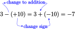
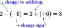
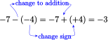

Section 2.1 Signed Numbers
¶Subsection Types of Numbers
Numbers greater than zero are called positive numbers, and numbers less than zero are negative numbers. We use a number line to illustrate relationships among numbers.
The natural numbers, zero, and the negatives of the natural numbers are called the integers:
Fractions, such as \(\dfrac{2}{3}, -\dfrac{5}{4}\) and \(3.6\text{,}\) lie between the integers on the number line.
Subsubsection Reading Questions
1.
What are integers?
The natural numbers, zero, and the negatives of the natural numbers.
As we move from left to right on a number line, the numbers increase. In the figure below, the graph of 6 lies to the left of the graph of 2. Therefore, 6 is less than 2, or, equivalently, 2 is greater than 6.
We use special symbols to indicate order:
For example,
The small ends of the symbols \(\lt\) and \(\gt\) always point to the smaller number.
Example 2.1.
- Which is the lower altitude, \(-81\) feet or \(-94\) feet?
- Express the relationship using one of the order symbols.
- Negative altitudes correspond to feet below sea level, and 94 feet is farther below sea level than 81 feet. Therefore, \(-91\) feet is the lower altitude.
\(-94 \lt -81\text{,}\) or \(-81 \gt -94\)
Subsection Adding Two Numbers with the Same Sign
We'll use number lines to review operations on signed numbers.
Case 1: The sum of two positive numbers.
Illustrate the sum \(5+3\) on a number line.
- Graph the first number, \(+5\text{,}\) as shown below.
- Move \(3\) units in the positive direction, or to the right.
- This brings us to the sum, which is \(+8\text{.}\) Thus, \(5+3=8\text{.}\)
Case 2: The sum of two negative numbers.
Illustrate the sum \((-5)+(-3)\) on a number line.
- Graph the first number, \(-5\text{,}\) as shown below.
- Move \(3\) units in the negative direction, or to the left.
- This brings us to the sum, \(-8\text{,}\) as expected. Thus, \((-5)+(-3)=-8\text{.}\)
Look Closer.
In the examples above, we see that:
Thus, the sign of the sum is the same as the sign of the two terms. To find the value of the sum, we add the absolute values, or unsigned parts, of the two terms.
Example 2.2.
Add \((-4)+(-7)\)
The sum is negative. We add the absolute values of \(-4\) and \(-7\) (the numbers 4 and 7 without their signs)to get 11, then make the sum negative: \((-4)+(-7)=-11\)
Subsection Adding Two Numbers with Opposite Signs
Suppose you have debts of $9, and assets of $6. (Your "assets" are your possessions.) What is your net worth? We can model this situation by the sum
where debts are represented by negative numbers and assets by positive numbers. If you use your $6 to pay off part of your debt, you will still owe $3, so your net worth is \(-$3\text{.}\) It makes sense that if your debts are greater than your assets, your net worth is negative.
Illustrate the sum \((-9)+(+6)\) on a number line.
- Graph the first number, \(-9\text{,}\) as shown below.
- Move \(6\) units in the positive direction, or to the right.
- This brings us to the sum, \(-3\text{.}\) Thus, \((-9)+(+6)=-3\text{.}\)
Look Closer.
In the example above, we see that the sum has the same sign as the number with the larger absolute value. (Can you explain this in terms of debts and assets?) When the two numbers have opposite signs, we find the value of the sum by subtracting the absolute values of the two numbers.
Example 2.3.
- Add \((-5)+(+9)\)
- Add \((+5)+(-9)\)
- The two numbers have opposite signs, so we subtract 5 from 9 to get 4, then make the answer positive, because \(+9\) has a larger absolute value than \(-5\text{.}\) Thus, \((-5)+(+9)=4.\)
- We subtract 5 from 9 to get 4, then make the answer negative, because \(-9 \) has a larger absolute value than \(+5\text{.}\) Thus,\((+5)+(-9)=-4.\)
Subsubsection Reading Questions
2.
What is the absolute value of a number?
The unsigned part of the number.
3.
When we add two numbers with opposite signs, we their absolute values.
subtract
We now have two rules for adding signed numbers.
Rules for Adding Integers.
- To add two numbers with the same sign, add their absolute values. The sum has the same sign as the numbers.
- To add two numbers with opposite signs, subtract their absolute values. The sum has the same sign as the number with the larger absolute value.
Subsection Subtracting a Positive Number
Let's compare the two problems:
Illustrate the sum \(9+(-5)\) on a number line.
- Plot \(9\) on the number line.
- Move \(5\) units in the negative direction, or to the left.
- The sum is \(4\text{.}\)
Illustrate the sum \(9-(+5)\) on a number line.
- Plot \(9\) on the number line.
- Move \(5\) units to the left, to indicate subtraction.
- The result is \(4\text{.}\) The picture is identical to the graph above.
Look Closer.
We see that subtracting a positive number has the same result as adding the negative number with the same absolute value. Thus, to subtract a positive number, we add its opposite.
Subsection Subtracting a Negative Number
When we add a negative number we move to the left on the number line. There are only two directions we can move on a number line, so when we subtract a negative number we must move to the right.
Compare the graphs for adding \(-3\) and subtracting \(-3\)
- Addition: \(~~~~5+(-3)~~~~\) Move 3 units to the left, to get 2.
- Subtraction: \(~~~~5-(-3)~~~~\) Move 3 units to the right, to get 8.
Look Closer.
Notice that
Subtracting a negative number has the same result as adding the positive number with the same absolute value. Thus, to subtract a negative number, we add its opposite.
Subsubsection Reading Questions
4.
True or False: \(-x\) always represents a negative number. Give an example to support your answer.
False. If \(x=-3\text{,}\) then \(-x=3\text{.}\)
5.
Subtracting a negative number is the same as their absolute values.
adding a positive number
From the examples above, we see that to subtract any number, positive or negative, we add its opposite. We can do this in steps as follows.
Rules for Subtracting Integers.
To subtract \(b\) from \(a\text{:}\)
- Change the sign of \(b\text{.}\)
- Change the subtraction to addition.
- Proceed as in addition.
This rule tells us that we can rewrite every subtraction problem as an addition problem by changing the sign of the second number.
Example 2.4.
Rewrite each subtraction problem as an addition, then compute the answer.
- 
- 
- 
Look Closer.
At first it may be difficult to understand why subtracting a negative number is the same as adding a positive number. Try thinking in terms of debts and assets. For example, suppose you have $25 in your wallet, and you have $5 in your hand to pay off a debt you owe a friend. If your friend now cancels (or subtracts) the debt, you are actually $5 richer:
Caution 2.5.
For simple subtractions we don't really need the subtraction rule. For example, we can subtract \(11-5\) just as we did in arithmetic:
However, if the subtraction involves negative numbers, it is usually easier to use the subtraction rule. Thus,
Look Ahead.
We can interpret the expression \(7-9\) either as a subtraction or as an addition:
Both give the same result, \(-2\text{.}\) Because addition is easier than subtraction, it is better to think of a long expression such as
as a sum of signed numbers. To do this, we add all the numbers together, and the \(+\) or \(-\) sign in front of each number tells us whether that number is positive or negative.
Remember that additions should be performed in order from left to right.
Example 2.6.
Simplify \(~~7-9+12-6\)
We add the signed numbers \(7\) and \(-9\) and \(12\) and \(-6\text{,}\) in order from left to right.
Caution 2.7.
The following calculation is incorrect:
We must perform additions and subtractions in order from left to right:
Subsection Multiplying Signed Numbers
Subsubsection Case 1: The product of numbers with opposite signs
We can think of multiplication as repeated addition. For example,
Similarly,
which is \(-6\text{,}\) so \(3(-2)=-6\text{.}\) Think in terms of money: if you owe three different people 2 dollars each, then you are 6 dollars in debt.
Because multiplication is commutative, it is also true that \(-2(3)=-6\text{.}\) This example illustrates the following fact.
The product of a positive number and a negative number is a negative number.
Example 2.8.
You can use your calculator to verify the following products.
- \((-4)(7)=-28\)
- \(5(-2.6)=-13\)
Subsubsection Case 1: The product of numbers with the same sign
You know that the product of two positive numbers is positive. It is also true that the product of two negative numbers is positive.
To understand why the product of two negative numbers is positive, you might think of canceling, or subtracting, several debts of the same amount. Or, you could observe the pattern in the lists of products below. As we move down the list, the product increases by equal amounts.
Based on the pattern in these calculations, the following rule seems reasonable.
The product of two negative numbers is a positive number.
Example 2.9.
You can use your calculator to verify the following products.
- \((-6)(-3)=-28\)
- \((-2.1)(-3.4)=7.14\)
Now we have a pair of rules about the products of signed numbers.
Products of Signed Numbers.
- The product of two numbers with opposite signs is a negative number.
- The product of two numbers with the same sign is a positive number.
Subsection Dividing Signed Numbers
Division is the inverse operation for multiplication. For example, we know that
Thus, every division fact can be converted into an equivalent multiplication fact. For example,
Note that the numerator in the division fact becomes the product in the multiplication fact. The same relationship between multiplication and division holds for negative numbers as well.
Example 2.10.
Rewrite each division fact as a multiplication fact.
- \(\dfrac{-144}{64}=-2.25\)
- \(-36 \div \dfrac{-3}{8}=96\)
The numerator in each division fact becomes the product in the multiplication fact.
- \(-144=-2.25(64)\)
- \(-36= \dfrac{-3}{8}(96)\)
Example 8 illustrates the rules for division of signed numbers.
Quotients of Signed Numbers.
- The quotient of two numbers with opposite signs is a negative number.
- The quotient of two numbers with the same sign is a positive number.
Subsubsection Reading Questions
6.
Which of these is a product?
- \(3+(-4)\)
- \(-3-4\)
- \(-3(-4)\)
- \(3-(-4)\)
6.
Rewrite the division fact \(\dfrac{48}{D}=Q\) as a multiplication fact.
\(DQ=48\)
Remember that a fraction can be thought of as a division. For example, \(\dfrac{3}{4}\) means \(3 \div 4\text{,}\) or 0.75. What about negative fractions? Because the quotient of two numbers with unlike signs is negative, the fractions \(\dfrac{-3}{4}\) and \(\dfrac{3}{-4}\) both represent the negative number \(-\dfrac{3}{4}\text{.}\) On the other hand, \(\dfrac{-3}{-4}\) is equal to the positive number \(\dfrac{3}{4}\text{.}\)
For many of the calculations in algebra, it is more convenient to write a negative fraction with the minus sign in the numerator, like this: \(\dfrac{-3}{4}\text{.}\)
Standard Form for Fractions.
A negative fraction is written in standard form when the minus sign is in the numerator: \(\dfrac{-a}{b}\text{.}\)
The standard form for a positive fraction has positive numerator and denominator.
Subsection Quotients Involving Zero
What is the meaning of an expression such as \(\dfrac{0}{2}\text{?}\) We can rewrite this quotient as an equivalent multiplication fact.
What number can we substitute for the question mark to make \(2 \cdot \alert{?} = 0\) a true statement? The only solution for this equation is \(0\text{.}\) Thus, replacing the question marks by \(0\) we have
In general, 0 divided by any (non-zero) number is 0.
Now consider a quotient with zero in the denominator, such as \(\dfrac{2}{0}\text{.}\)
What number can we substitute for the question mark to make \(0 \cdot \alert{?} = 2\) a true statement? This equation has no solution, because 0 times any number is 0, not 2. Thus, there is no answer for the division problem \(\dfrac{2}{0}\text{.}\) We say that the quotient \(\dfrac{2}{0}\) is undefined. In general, we cannot divide any number by zero.
Quotients Involving Zero.
If \(a\) is any nonzero number, then
Example 2.11.
- \(6 \div 0~~\) is undefined.
- \(0 \div 8=0\)
Subsubsection Reading Questions
8.
Which of these is undefined? \(~\dfrac{-6}{0}~\) or \(~\dfrac{0}{-6}~\text{?}\)
Subsection Skills Warm-Up
¶Subsubsection Exercises
1.
Graph the numbers on the number line: \(0,~-3,~3,~\dfrac{1}{2},~\dfrac{-5}{3},~5\dfrac{1}{4}\)

2.
Graph the numbers on the number line: \(-4.5,~-2,~-1.4,~0.6,~2\)
Replace the comma in each pair by the proper symbol, \(\lt,~\gt,~\) or \(=\text{.}\)
3.
- \(0,~-4\)
- \(-5,~-9\)
- \(-2\frac{5}{8}~,-2\frac{1}{8}\)
- \(13.6,~13.66\)
4.
- \(3,~-7\)
- \(-1,~-6\)
- \(-3~,-3\frac{3}{4}\)
- \(-18.4,~-19.6\)
Subsubsection Answers to Skills Warm-Up
Subsubsection Exercises
1.
2.
Subsection Homework 2.1
For Problems 1–4, add.
1.
- \(5+(-3)\)
- \(-5+3\)
- \(-5+(-3)\)
2.
- \(-15+(-20)\)
- \(15+(-20)\)
- \(-15+20\)
3.
- \(-47+22\)
- \(6.8+(-2.7)\)
- \(-\dfrac{5}{6}+\dfrac{2}{3}\)
4.
- \(-13+(-36)\)
- \(-2.5+4.9\)
- \(-\dfrac{3}{4}+(-\dfrac{3}{8})\)
5.
Rewrite each subtraction problem as an addition problem, and give the answer.
- \(4-8\)
- \(3-(-9)\)
- \(-8-(-6)\)
- \(-6-5\)
For Problems 6–8, add or subtract as indicated.
6.
- \(12+(-6)\)
- \(6-(-4)\)
- \(-2-8\)
- \(-7+9\)
7.
- \(-14-(-3)\)
- \(-5+(-4)\)
- \(-6-(-6)\)
- \(-4-4\)
8.
- \(24-(-10)\)
- \(18+(-12)\)
- \(-16+14\)
- \(-25-(-15)\)
For Problems 9–10, compute each sum or difference in parts (a) and (b), and decide which is easier. Then decide how to simplify the expression in part (c).
9.
- \(15-(+5)\)
- \(15+(-5)\)
- \(15-5\)
10.
- \(-6-(+2)\)
- \(-6+(-2)\)
- \(-6-2\)
For Problems 11–12, compute mentally.
11.
- \(2-7\)
- \(-2-7\)
- \(-2+7\)
- \(2-(-7)\)
- \(-2-(-7)\)
12.
- \(13-5\)
- \(-13-5\)
- \(-13+5\)
- \(13-(-5)\)
- \(-13-(-5)\)
For Problems 13–14, add.
13.
- \(-5+3+(-4)\)
- \(-4+(-7)+(-7)\)
14.
- \(6+(-14)+12+(-17)\)
- \(-35+(-5)+28+(-21)+13+(-14)\)
15.
Simplify by adding the signed numbers.
- \(2+5-8-1\)
- \(-23+28-14+21\)
- \(-34-52+68-21\)
16.
Simplify by following the rules for addition and subtraction.
- \(-6+5+(-3)-(-8)\)
- \(-11-2-(-4)-(-3)\)
- \(-14-(-16)-4+(-7)\)
For Problems 17–20, multiply or divide.
17.
- \((-8)(-4)\)
- \(\dfrac{12}{-4}\)
- \(-20 \div (-5)\)
18.
- \(-6(-1)(3)\)
- \(\dfrac{-8}{0}\)
- \((-5)(0)(6)\)
19.
- \(0(\dfrac{-7}{15})\)
- \((-2)(-2)(-2)\)
- \(-30 \div 0\)
20.
- \((\dfrac{1}{2})(\dfrac{-3}{4})\)
- \(-0.1(-26)\)
- \((\dfrac{-1}{2}) \div (\dfrac{-3}{4})\)
For Problems 21–22, perform the indicated operation.
21.
- \(-12-4\)
- \(-12(-4)\)
- \(-12-(-4)\)
- \(-12+(-4)\)
- \(-12 \div 4\)
22.
- \(-3-3\)
- \(-3(-3)\)
- \(-3-(-3)\)
- \(-3+(-3)\)
- \(-3 \div (-3)\)
23.
- Find two numbers whose sum equals zero.
- Find two numbers whose difference equals zero.
- Find two numbers whose product equals zero.
- Find two numbers whose quotient equals zero.
24.
- Find two numbers whose product is \(1\text{.}\)
- Find two numbers whose product is \(-1\text{.}\)
- Find two numbers whose quotient is \(1\text{.}\)
- Find two numbers whose quotient is \(-1\text{.}\)
For Problems 25–30, solve.
25.
\(x-9=-4\)26.
\(-9z=12\)27.
\(\dfrac{-a}{4}=8\)28.
\(9-x=3\)29.
\(t+5=-8\)30.
\(-6b=27\)31.
- What is the solutions of the equation \(-x=-3\text{?}\)
- What is the solutions of the equation \(-x=6\text{?}\)
32.
Find and correct the error in the following calculation:
For Problems 33–40, write and simplify an expression using negative numbers to answer the question.
33.
Thelma's failing company is worth \(-$1000\text{.}\) She decides to merge with Louise's company, whose net worth is \($1500\text{.}\) What is the combined worth of the two companies?
34.
Emily is at an elevation of \(-87\) feet when she begins climbing a mountain. What is her elevation after ascending \(127\) feet?
35.
The temperature at noon was \(-2 \degree\) and dropped \(8 \degree\) over the next 12 hours. What was the temperature at midnight?
36.
Rocky lost $450 betting on the horses this afternoon and then dropped $245 at a poker game in the evening. What was the net change in his financial status for the day?
37.
A tourist in California can travel from Death Valley, at an elevation of \(-282\) feet, to Mt. Whitney, at \(14,494\) feet. What is his net change in elevation?
38.
Despite being overdrawn by $24.20, Nelson writes a check for $11.20. What is his new balance?
39.
Whitney is climbing down a sheer cliff. She has pitons spaced vertically every 6 meters. What is her net elevation change after descending to the eighth piton from the top?
40.
The temperature on the ice planet Hoth dropped \(115 \degree\) in just 4 hours. What was the average temperature change per hour?
Choose the correct equation to model Problems 41–44.
37.
Last night the temperature rose \(12 \degree\) and this morning the temperature is \(5 \degree\text{.}\) What was the temperature yesterday?
38.
Marta's score was \(-12\text{,}\) but after the last hand her score rose to \(-5\text{.}\) How many points did she make on the last hand?
39.
Bradley rode the elevator down 12 floors and emerged five floors below ground. What floor did he start on?
40.
Orrin was $12 in debt, but he did some yard work this weekend and after paying his debt he has $5. How much did he make?